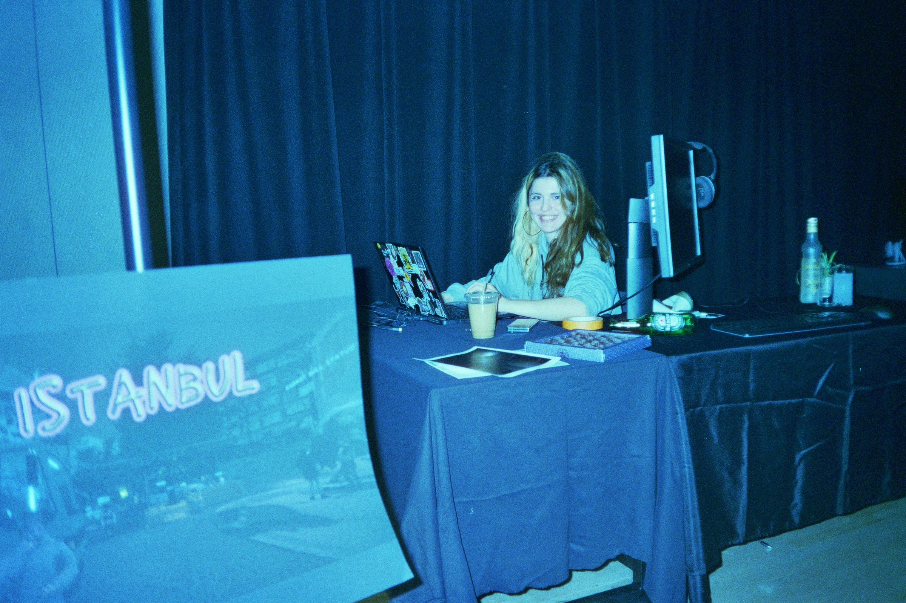

-
Hi, I'm Oyku (aka yuko), a Turkish game developer, creative coder and techinal artist based in NYC.
I create games, build tools, and design interactive experiences through code.
Specialized in Unity, C#, and HLSL, with extensive experience in tool creation, shader programming, and collaborative pipelines. Skilled at building performant, creative, and visually dynamic games in both indie and professional settings.
I studied Computer Engineering, and now I develop indie games, perform live visuals as a VJ, and teach game programming as both a developer and technical artist.
I recently completed my MFA in Game Design at NYU, where I explored storytelling, world-building, and memory through experimental projects and collaborative games.
My toolkit: C# 💜 Unity 💜 GLSL / HLSL 💜 Python, C++, JavaScript 💜 Blender 💜 Photoshop 💜 Touchdesigner 💜
That's right, you'll never stop me.
yuko – all lowercase <3instagram: @madayten
github @oykuyamakov
itch.io @yuko - 